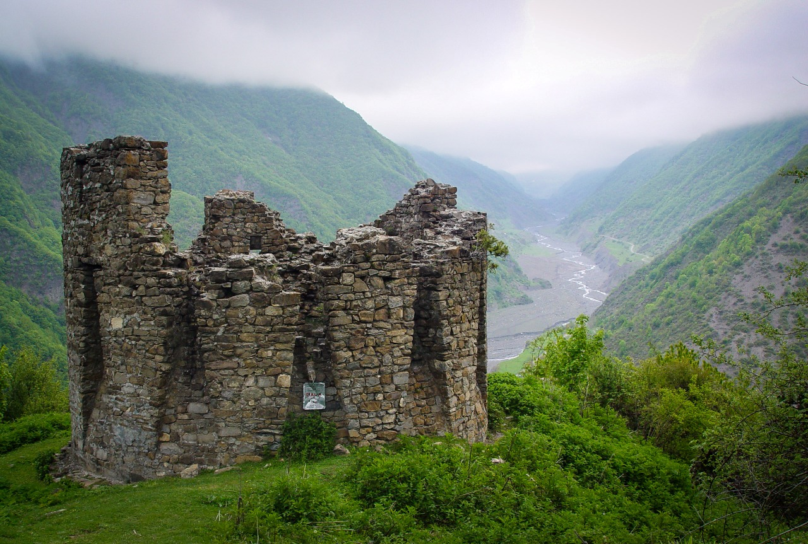
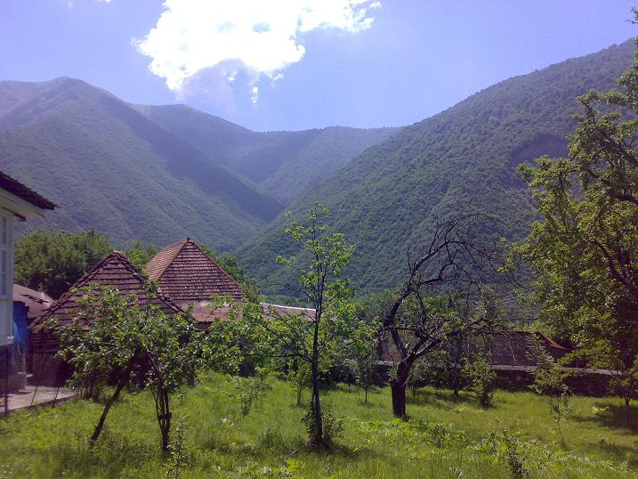
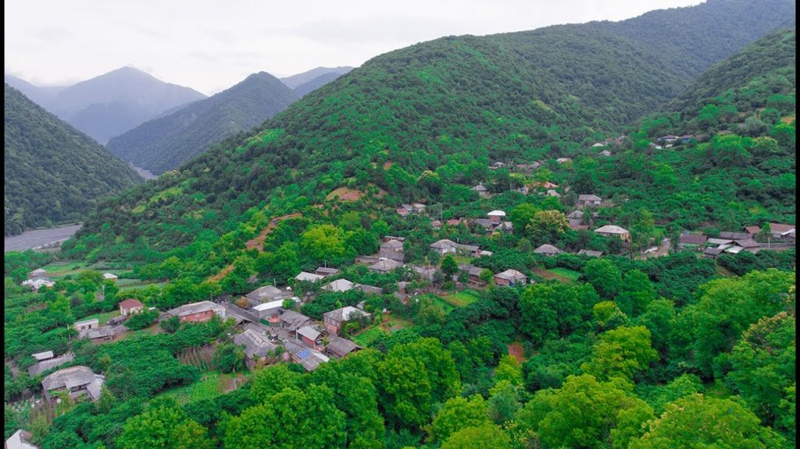
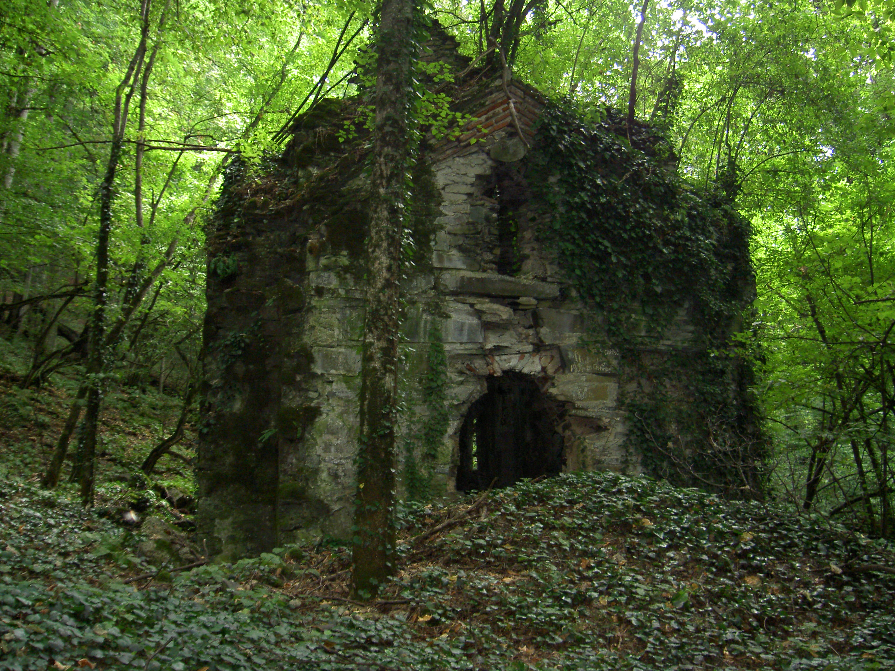

İlisu kəndi rayon mərkəzindən 12 km məsafədə, dəniz səviyyəsindən 1356-1091 metr yüksəklikdə yerləşir. Kənddən 10 km şərqdə rayonun ən hündür zirvəsi Qaraqaya dağı var. Ərazidə bütünlüklə qışı rütubətli keçən soyuq iqlim tipi hakimdir. Qarla örtülü günlərin sayı 120-160 gündür. Kənd yaxınlığında zəngin müalicə əhəmiyyətli təbii mineral sular mövcuddur. Hamamçay mineral bulağının temperaturu 40°C-dir. Bundan başqa, İlisuda Mohsu, Gözbulaq, Oğlanbulaq, Qızbulaq mineral suları da var. İlisu turistlərin ən sevimli istirahət yerlərindən biridir. Ərazidə bir çox gözəl bulaqlar var.

Kənd Şəkidən 5 km uzaqlıqda Kiş çayının sahilində, dağətəyi ərazidə yerləşir. Qədim yaşayış məntəqələrindəndir. Kəndin ərazisi turizm üçün əlverişlidir. Dörd tərəfdən dağla əhatə olunan kəndin əsas hissəsi "Tat" dağının ətəyində yerləşir. Öz mənbəyini Kiçik Qafqaz sıra dağlarından götürən kəndin kənarından axan Kiş çayı meşə ilə əhatələnib. Kənddə çox sayda qədim tikililər mövcuddur.

Kənddə əsasən avarlar yaşayırlar. Əhalinin əsas məşğuliyyəti taxılçılıq, tütünçülük, fındıqçılıq, tərəvəzçilik, bağçılıq və maldarlıqdır. Balıq həvəskarları Makov kəndi ərazisində yerləşən “Forel birliyi”nə baş çəkə bilərlər. “Forel birliyi” 1978-ci ildən fəaliyyət göstərir. Buna “balıqçılıq istirahət mərkəzi” də deyirlər. Ərazidə forel balıqları yetişdirilir.

Katex kəndi Azərbaycanın qədim yaşayış məskənlərindən biridir. Xaldan-Balakən magistralı üzərində yerləşən kənd ərazisində 5-7-ci əsrlərə aid Qala divarları, 17-18-ci əsrlərə aid gözətçi qüllələri və qalalar, həmçinin 18-ci əsrə aid islam elmi mərkəzi və sair tarixi-memarlıq abidəsi kimi qorunur. Kənddəki Katexçay şəlaləsi isə Azərbaycanda ən məşhur şəlalələrdən biridir. Şəlalənin hündürlüyü 20 metrə yaxındır. Şəlaləyə getmək üçün Katex kəndindən keçən sərt eniş-yoxuşlarla hərəkət etmək lazımdır. Bura turistlərin ən çox üz tutduğu məkanlardan biridir.